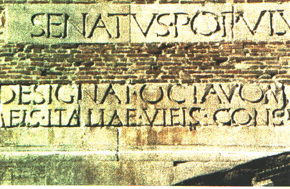

ISCRIZIONE
La restituzione più sicura dell'iscrizione è quella del 1912.
SENATUS. POPULUSQUE. ROMANUS./ IMP. CAESARI. DIVI. IULI. F. AUGUSTO. IMP. SEPT. / COS. SEPT. DESIGNAT. OCTAVOM. VIA. FLAMINIA. ET. RELIQUEIS. / CELIBERRIMEIS. ITALIAE. VIEIS. CONSILIO. ET. AUCTORITATE. EIUS. MUNITEIS.
Il senato ed il popolo romano (dedicano questo monumento) all'imperatore Cesare (Ottaviano) Augusto, figlio del divo Giulio (Cesare), sette volte imperatore, sette volte console e designato per l'ottavo consolato, per aver promosso la sistemazione della Via Flaminia e delle altre più importanti strade d'Italia.
